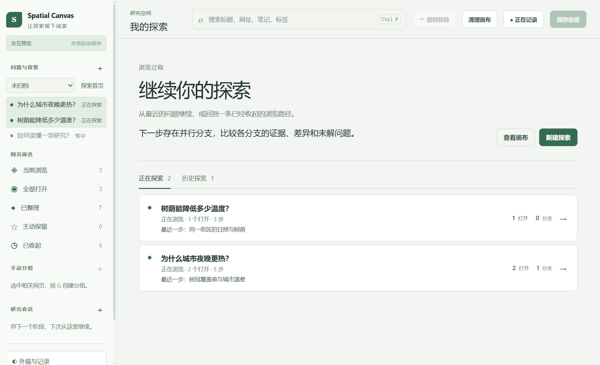

关闭标签页之后，仍能接着查原来的问题。
Spatial Canvas 记录网页跳转、来源和分支。它适合技术调研、产品比较、课程学习和写作。
下载预览版 · 隐私政策 · 安装与反馈
先找到上次的问题，再打开完整路径。关闭页面会保留历史步骤，清理才移除记录；笔记、标签和手动关联帮助留下值得继续的线索。
核心功能免费。目前只提供 Chromium 预览包，尚未上架商店。AI 使用本地规则建议，未接入远程模型。
